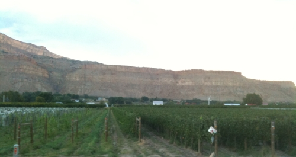

|
North America >
USA >
Colorado >
Boulder County >
Bookcliff
Bookcliff
Boulder, CO

A Mesa County vineyard from which Bookcliff draws winegrapes.
Bookcliff's winery is located in Boulder, Colorado, but they source their grapes from vineyards located in throughout the state of
Colorado.
bookcliffvineyards.com
Vintages:
Friday's Folly 100% Colorado Grown Red Table Wine
NV
|